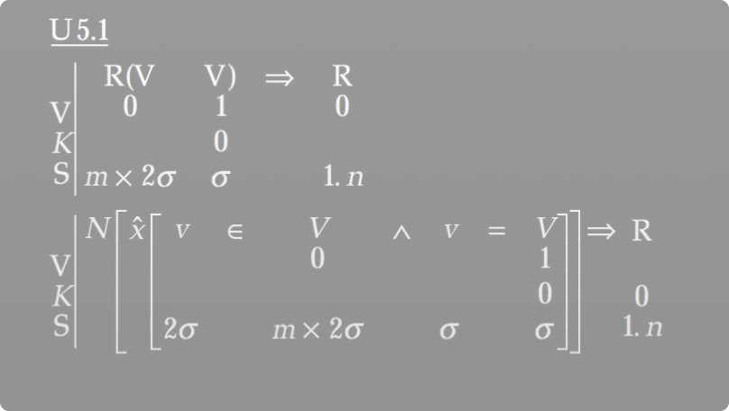
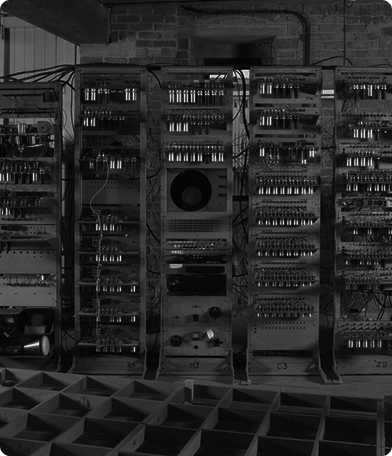
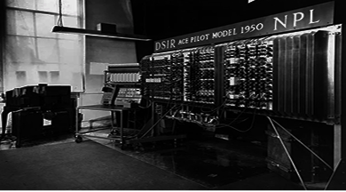

1946
KONRAD ZUSE
Plankalkül: A Primeira Linguagem de
Programação da História
A primeira linguagem de programação de alto nível já criada.
Desenvolvida na Alemanha logo após a Segunda Guerra Mundial,

1948
UNIV. MANCHESTER
Manchester SSEM (Baby)
O Manchester SSEM, apelidado de "Baby", foi o
primeiro computador do mundo a rodar um
programa armazenado na memória.

1949
Manchester Mark I
Manchester Mark I
O Manchester Mark I foi um dos primeiros computadores eletrônicos de uso geral com arquitetura de programa armazenado.
1949
EDSAC
EDSAC e o Assembly
O EDSAC foi um dos primeiros computadores eletrônicos com programa armazenado.

1950
Pilot ACE
Pilot ACE
O Pilot ACE foi um dos primeiros computadores eletrônicos construídos no Reino Unido.